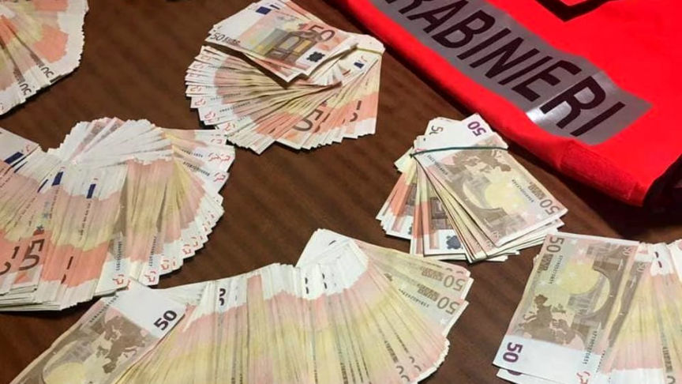
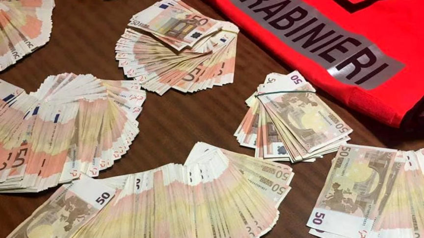

International Counterfeit Banknotes Vendor Busted
~1 min read | Published on 2023-01-17, tagged Arrested, Counterfeits using 241 words.
The Carabinieri Anti-Counterfeiting Command took down a group suspected of distributing counterfeit banknotes through the dark web.

According to the Carabinieri, the investigators apprehended eight suspects in Naples, Italy, accused of running an international ring that distributed counterfeit euros under an undisclosed vendor name on dark web marketplaces and encrypted messaging platforms.
The investigations coordinated by the Naples Public Prosecutor's Office were launched in July 2018 and focused on putting an end to the group's activities. The investigations revealed that the group had been operating since 2012. The group had accomplices in several European countries including Austria, Belgium, France, Germany, Holland, Portugal, Spain, and Ukraine.
The suspects received payments in cryptocurrency and hid the counterfeit banknotes in items such as toys and wooden artifacts before mailing them to their buyers.
In the course of the investigations authorities in Italy and other countries intercepted and seized 41 packages. The seizures resulted in the recovery of fake euros in 20, 50, and 100 denominations. The seized notes had a total value of 120,000 euros. The seizures resulted in the arrest of 31 suspected buyers.
In December 2021, as part of the operation, the investigators took down a counterfeit euro print shop in Naples and arrested its operators.
On January 13, 2023, authorities in Italy and other European countries under the coordination of Europol executed search warrants on suspected premises. The searches resulted in the arrest of the eight suspects in Naples. The investigators also identified 50 more suspects.

According to the Carabinieri, the investigators apprehended eight suspects in Naples, Italy, accused of running an international ring that distributed counterfeit euros under an undisclosed vendor name on dark web marketplaces and encrypted messaging platforms.
The investigations coordinated by the Naples Public Prosecutor's Office were launched in July 2018 and focused on putting an end to the group's activities. The investigations revealed that the group had been operating since 2012. The group had accomplices in several European countries including Austria, Belgium, France, Germany, Holland, Portugal, Spain, and Ukraine.
The suspects received payments in cryptocurrency and hid the counterfeit banknotes in items such as toys and wooden artifacts before mailing them to their buyers.
In the course of the investigations authorities in Italy and other countries intercepted and seized 41 packages. The seizures resulted in the recovery of fake euros in 20, 50, and 100 denominations. The seized notes had a total value of 120,000 euros. The seizures resulted in the arrest of 31 suspected buyers.
In December 2021, as part of the operation, the investigators took down a counterfeit euro print shop in Naples and arrested its operators.
On January 13, 2023, authorities in Italy and other European countries under the coordination of Europol executed search warrants on suspected premises. The searches resulted in the arrest of the eight suspects in Naples. The investigators also identified 50 more suspects.